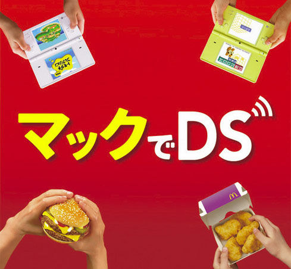

Home
eCDP
eSmart/2.0
DS Mac Adventures
DS De Mac
The McDonald's DS
DS De Mac (マックでDS)
DS De Mac (マックでDS) was a service in McDonald's across Japan. Ds De Mac allowed customers to download exclusive games or take part in limited time events such as Pokemon distributions and things like
Ds Mac Adventures
.

DS De Mac Ad - Source:
https://www.perfectly-nintendo.com/japan-mcdonalds-terminating-its-mac-de-ds-service-for-nintendo-handhelds-on-june-24th/